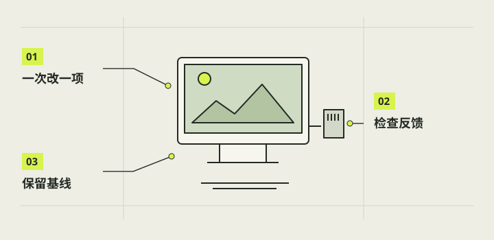

功能与交互优化
优化相机时先记录哪里慢、哪里难用，再一次只改变一个可比较条件。取景顺滑、按钮响应、照片保存、图库浏览和传图是不同链路；某一项变好不能推断全部通过。本章按真实任务给出观察顺序，并标清当前软件已有能力与仍待实机校准的目标。

本章完成目标
- 按取景、拍摄、图库和传图分别记录问题
- 对比一次调整前后的可观察结果
- 不把预留项或未知电量当作已完成能力
开始前准备好
- 第08章已用官方工具完成 JPG 基线；测试 自制相机交互还须完成参考版本的本机适配。
- 保留版本、系统环境和原始照片
- 准备可重复的光线、场景与操作顺序
- 回归检查
- 改软件后重新确认原本可用的流程仍能工作。
- 帧率
- 单位时间显示的画面数，软件目标值不等于实机测得值。
- 预留功能
- 界面有入口，但效果或硬件条件还未完成验收的能力。
建立同场景基线
匹配的 自制相机应用发布并按说明安装后，在固定光线和静止物体前，按启动、取景、开菜单、拍一张、回看、返回的顺序操作，逐步记录明显停顿、按钮延迟、画面冻结或保存等待。记下版本与系统，不只写“很卡”。若能取得发布版日志，可记录帧率和处理耗时，但这些数字仍需结合实际体验。
分别核对取景与成片
在同一场景下每次只改变一次比例、全屏或倍率，先看预览构图，再拍照打开 JPG，比对照片范围。调整曝光、白平衡或 ISO 时记下改动与结果，不把滑块位置当传感器实测数值。现有 ISO 标度和画质仍需校准，HDR 选项也不等于真实多帧 HDR。保留每次原图以便复查。
核对图库和分享
先在图库打开几张已有 JPG，观察首屏加载、滚动、选中与返回，再单独试手机传图。基础传到 iPhone 曾获用户成功反馈；多张减选、ZIP 完整性、原图字节一致和直接入“照片”没有同等实机证据。二维码只用于当前会话，网页下载不能写成自动相簿导入。
对照控件与系统状态
若硬件章节已核准拉杆、按钮和白灯，分别记录单次拨动拍照、正常退出、关机与再开机；每项与屏幕快门分开。旧版用户反馈证明基本拉杆与开关机可用，但 1.0 启动变化后还须回归。没有可信电池检测时显示未知，不为了美观补估算百分比。
注意 / 本章不新增 GPIO 接线或断电操作。
只推广复验过的改动
把问题写成操作步骤、预期、实际、版本和日志，一次只修改一个能解释现象的环节，再按第08章重跑拍照及本章相关流程。电脑替身测试只能证明逻辑在该环境成立；最终要用真实 Pi、屏幕、相机和手机复验。若新版失败，按发布说明回退并保留照片与旧包。
完成后，逐项打勾。
勾选帮助你记录进度，不代表项目替你完成了实机验收。
遇到问题，从这里排查。
预览流畅但保存或图库仍慢
分开记录取帧、处理、写文件和缩略图加载，不用单一帧率替代全链路体验。
显示电量百分比却无硬件读数
查数据来源；无可信读数时显示未知，等检测硬件与校准。
本项目的实际进展
- 0.4.0 本地含预览处理和图库优化，Mac 夹具速度不是 Pi3B+ 的实测帧率；旧版“画面很卡”的反馈不能因本地测试自动关闭。
- 手机单张基础传输有用户反馈；直接入 iPhone“照片”按 C-DEC-017 暂缓，批量与 ZIP 待验。New Cam 1.0.0 继承功能，但 00:50:57 配置成功报告不含新版交互回归。
资料与核对依据
- New Cam 1.0 功能状态 · camera-project/C-软件/pi-camera-1.0/feature-status.md
- R4 0.4.0 功能状态 · camera-project/C-软件/pi-r4-next/feature-status.md
- C 手机传图反馈 · camera-project/C-软件/qa/r4-transfer-20261026/user-feedback.md
- C 最新交接 · camera-project/C-软件/handoff.md
资料核对日期：2026-10-30。不同硬件、系统版本和材料需要重新验证。